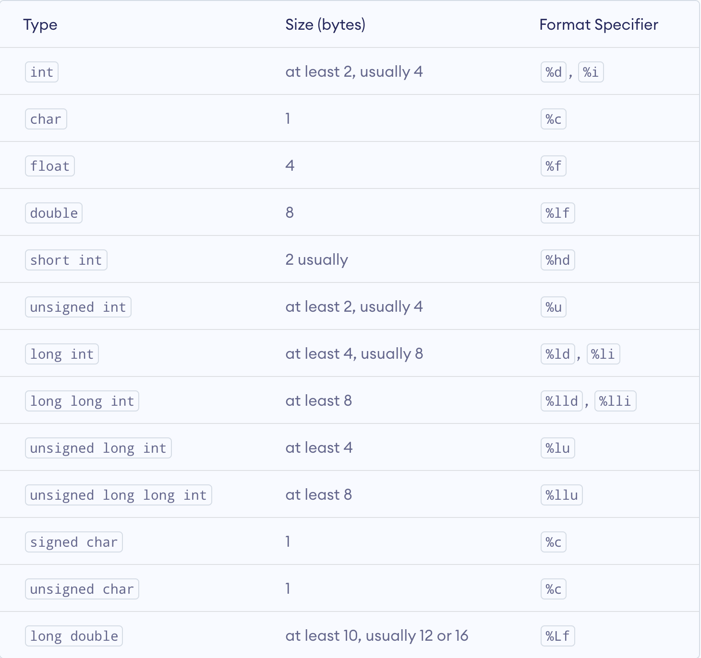
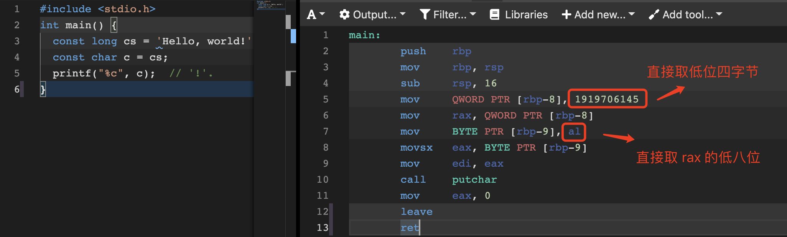

《C Primer Plus 第六版》读书笔记
PS.本文仅根据作者自身情况选择性整理，并未囊括所有书中提到的内容（博客中的其他笔记也如此）。文中标注的页面编号对应于本书的当当电子版，而非纸质版。
第一章 - 初始 C 语言
- Page 30ISO C 标准和 ANSI C 标准完全相同，两者的最终版本通常叫作 C89 或 C90（ANSI C 的叫法更为常用）。
- Page 30C 精神：
- 信任程序员（自 C11 开始弱化该标准）；
- 不要妨碍程序员做需要做的事；
- 保持语言精炼简单；
- 只提供一种方法执行一项操作；
- 让程序运行更快，即使不能保证其可移植性（针对目标计算机定义合适的操作，而非强加一个抽象统一的定义）。
第二章 - C 语言概述
- Page 72C99 和 C11 标准对
main函数的定义方式有所要求：
// 不需要参数时，需置为 void；
int main(void) { return 0; }
- Page 79C11 标准下支持最长 63 个字符的标识符名。
第三章 - 数据和 C
- Page 115
scanf函数在响应回车键后，该换行符也被发送到了控制台成为下一个输入字符。 - Page 119C99 新增加了关键字
_Bool表示布尔型数据，该类型默认为无符号整型，原则上占用 1 位存储空间；_Complex表示复数；_Imaginary表示虚数。
#include <stdio.h>
int main(void) {
_Bool x = 1; // true.
_Bool y = 0; // false.
return 0;
}
- Page 1313 个附属关键字，可用于修饰基本整数类型：
short、long，以及unsigned。

- Page 143C 语言中可以定义具有多个字符的字符常量，字符常量默认占用 4 个字节。

- Page 152C99 中提供了精确宽度整数类型（stdint.h），比如
int32_t。这些类型本身会作为其他 C 整数类型的别名，用于保证在不同系统上都能够使用具有同样精确宽度的类型。除此之外还有“最小宽度类型”（侧重占用空间，可容纳某宽度数值的最小类型，如int_least8_t）与“最快最小宽度类型”（侧重计算速度，可容纳某宽度数值的最快类型，如int_fast8_t）。 - Page 154C99 和 C11 提供了诸如
PRId32等字符串宏（inttypes.h），可用于作为printf函数的格式说明符。
#include <inttypes.h>
#include <stdio.h>
int main(void) {
printf("The number is:%" PRId32, 100);
return 0;
}
- Page 160C99 增加了一种新的浮点型常量格式 —— 用 16 进制和 2 的幂表示浮点型常量，如：0xa.1fp10（对应十进制值 10364.0）。
- Page 175简单地由浮点数转为整数可能会使用诸如
cvttss2si等指令，而不会影响值的重新布局。而由浮点指针到整型指针的转换，会使得数据位模式的解释发生变化。 - Page 179当缓冲区满、遇到换行字符或需要输入时，缓冲区中的内容会被发送到屏幕。
第四章 - 字符串和格式化输入/输出
- Page 200在使用
sizeof时，对于类型，圆括号必不可少；对于特定量，圆括号可有可无。 - Page 210float.h 与 limits.h 头文件中定义了一些可表示类型最大最小范围的宏常量（如 INT_MAX \ LLONG_MIN \ FLT_MAX 等）。
- Page 221stddef.h 头文件将
size_t定义为系统使用sizeof运算符所返回的类型，可以用 %zd 类型说明符表示。对于float类型，由于历史原因，没有对应的类型说明符。 - Page 249
scanf函数格式字符串中的空白意味着跳过下一个输入项前面的所有空白。
#include <stdio.h>
int main(void) {
char ch;
scanf("%c", &ch); // 从输入的第一个字符开始读取；
scanf(" %c", &ch); // 从输入的第一个非空白字符开始读取；
return 0;
}
- Page 251
printf中的变宽度输出字符（*）：
#include <stdio.h>
int main(void) {
unsigned width = 8;
unsigned precision = 3;
printf("Weight=%*.*f\n", width, precision, 242.5); // 242.500.
return 0;
}
- Page 252
scanf中的跳过输入项字符（*）：
#include <stdio.h>
int main(void) {
int n;
scanf("%*d %*d %d", &n);
return 0;
}
第五章 - 运算符、表达式和语句
- Page 272C 用运算符表示算术运算。
- Page 274C 使用可修改的左值（modified lvalue）标记可赋值的实体。用于存储值的数据存储区域成为数据对象（data object）。当前标准建议，赋值运算符左侧应该是对象定位值（object locator），右侧应该是表达式的值。
- Page 277C 语言中支持多重赋值：
int main(void) {
let x = y = z = 0;
return 0;
}
- Page 286C99 中整数除法的截断采用“趋零截断”，因此 -3.8 会被截断为 -3。
- Page 290当运算符共享一个运算对象时，优先级（Precedence）决定了求值顺序，若优先级相同，则取决于结合性（Associativity）。如表达式
12 / 3 * 2，将从左往右结合，先求值除法运算符，再求值乘法运算符。但当运算符两侧的子表达式优先级相同时，C 并未规定先执行哪一侧。如表达式6 * 12 + 5 * 20，C 并未规定先执行哪个乘法。具有相同优先级的运算符，它们的结合性也相同。>More<。 - Page 297对于求模运算：C99 之后，求模结果的正负性与第一个操作数相同。无论何种情况，只要 x 与 y 均为整数，则：
x % y等于x - (x / y) * y。 - Page 306递增、递减运算符：优先级仅低于圆括号。
- 不建议使用的场合：编译器对函数实参或表达式的求值顺序不固定，而由于递增、递减运算符的加入，则可能导致计算结果出现偏差。
- 如果一个变量出现在一个函数的多个参数中；
- 如果一个变量多次出现在一个表达式中。
- Page 309C 中的每一个表达式都有一个值（包括
void表示的 nothing）：
int main(void) {
int c; // a declaration without initializer.
int b = 6 + (c = 3 + 8); // 17.
return 0;
}
- Page 331在 ANSI C 之前使用的函数声明，仅指明了函数的函数名与返回类型，而不包含参数类型。因此在函数调用时，若传入的参数无法被隐式转为函数定义时的类型，则该传入的参数会被丢弃。
#include <stdio.h>
void foo();
int main(void) {
foo(16.0f); // passed param will be discarded.
}
void foo(int n) {
while(n-- > 0) {
printf("#");
}
}
第六章 - C 控制语句：循环
（待更新）
评论 | Comments